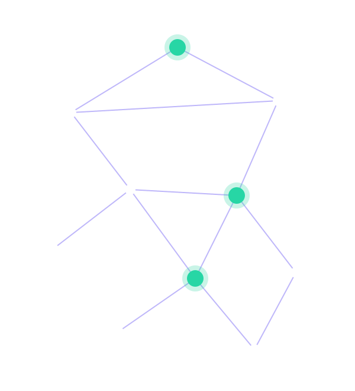

Chatbot & Virtual Assistant
Asisten percakapan untuk layanan pelanggan, HR, atau helpdesk internal. Menjawab dari dokumen dan data perusahaan Anda, lalu menyerahkan ke manusia saat perlu.
Sinaptik AI membangun chatbot, otomasi, dan sistem prediksi yang terhubung langsung ke data dan alur kerja tim Anda. Dari ide sampai berjalan di produksi.

Lima layanan inti. Semuanya bisa dimulai dari satu masalah kecil yang ingin Anda selesaikan lebih dulu.
Asisten percakapan untuk layanan pelanggan, HR, atau helpdesk internal. Menjawab dari dokumen dan data perusahaan Anda, lalu menyerahkan ke manusia saat perlu.
Mengubah pekerjaan berulang seperti input data, verifikasi dokumen, dan pelaporan menjadi alur otomatis.
Deteksi cacat produk, hitung stok dari foto, dan baca dokumen dengan OCR yang dilatih untuk kasus Anda.
Perkiraan permintaan, risiko churn, atau kebutuhan perawatan mesin dari data historis Anda.
Menyambungkan model bahasa ke basis pengetahuan Anda, atau menyesuaikannya untuk istilah dan gaya bahasa industri Anda.
Sinaptik AI berisi insinyur data, pengembang web, dan desainer produk. Kami percaya proyek AI yang berhasil ditentukan oleh data yang rapi dan alur kerja yang jelas, bukan hanya oleh model yang paling besar.
Karena itu kami mulai dengan memahami proses Anda, membuat prototipe yang bisa dicoba tim Anda sendiri, lalu memperbaikinya bersama-sama.
Tim kami akan membalas dalam satu hari kerja dengan pertanyaan lanjutan dan gambaran langkah awal. Sesi konsultasi pertama gratis.
Atau tulis langsung ke halo@sinaptik.example